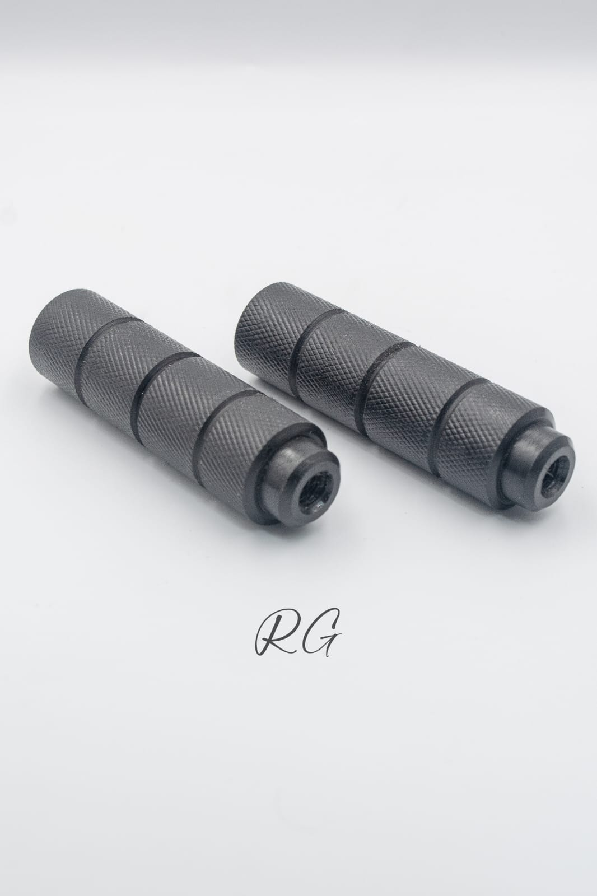
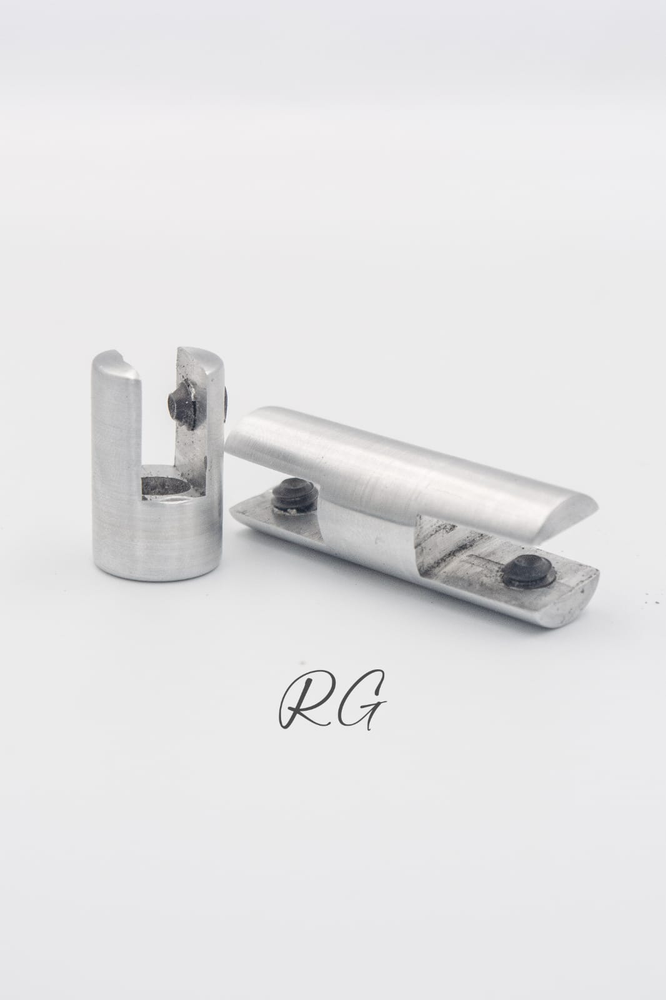
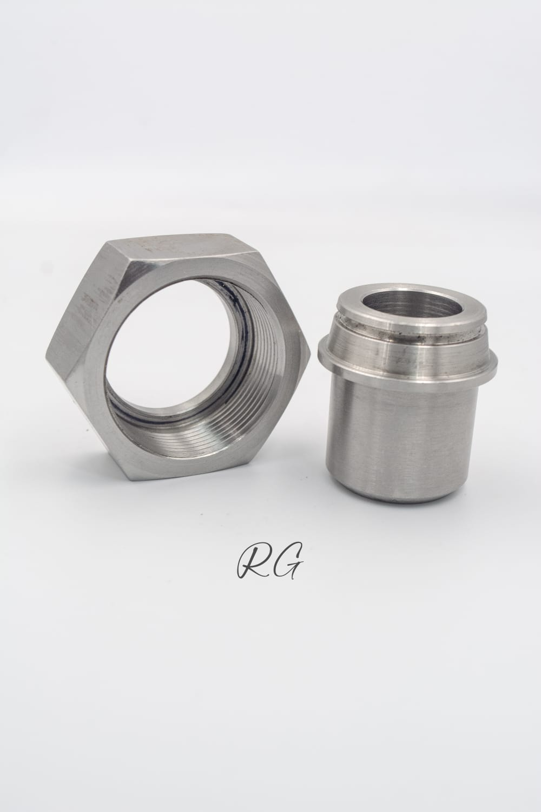
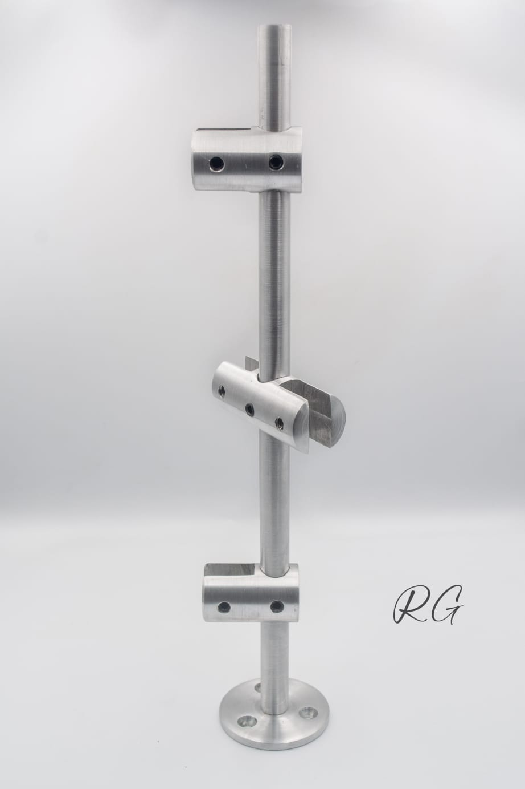
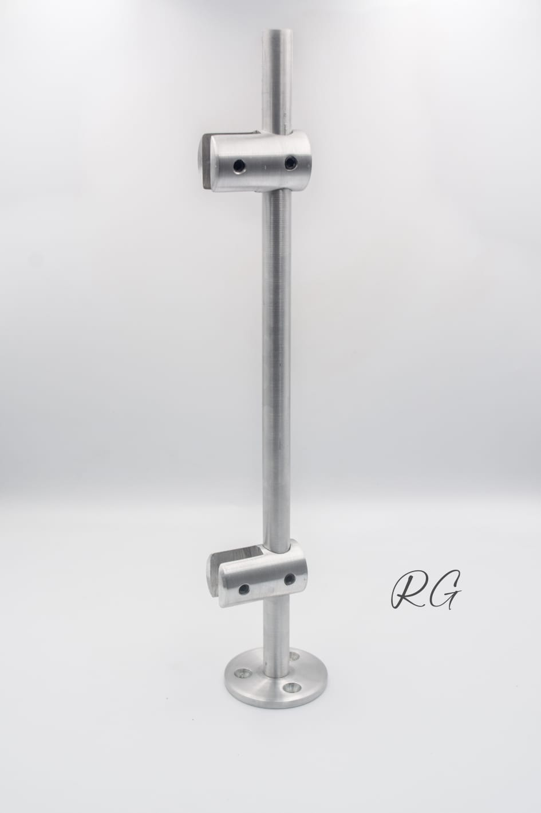
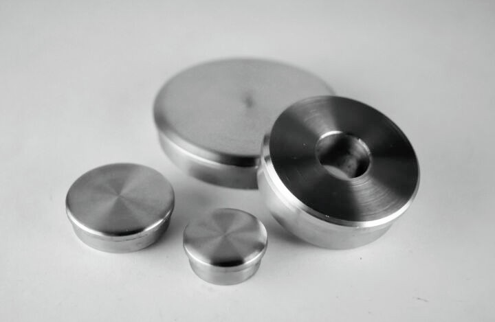
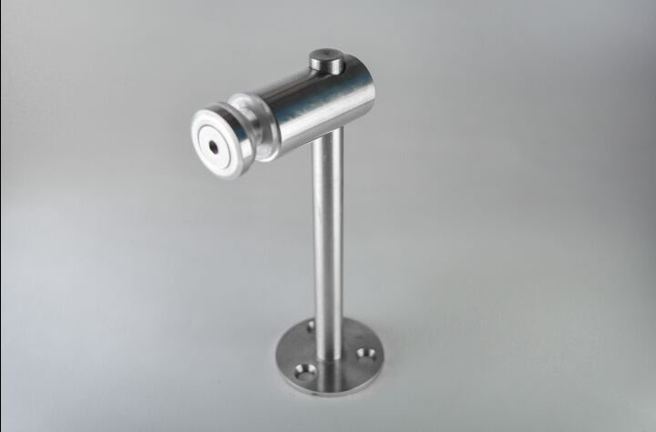

Nuestros Productos

Dilatador en acero inoxidable

Dilatador Ranurado en Aluminio

Dilatador doble

Produccion en serie en plasticos

Produccion en serie en bronce

Produccion en serie en aluminio

Dilatador Ranurado doble en Aluminio

Produccion en serie en 12L14

Tuercas y bujes de sello

Barriles pasailos

Tapas

Accesorios para vidrio #1

Accesorios para vidrio #2

Accesorios para vidrio #3

Accesorios para vidrio #4

Accesorios para vidrio #5

Accesorios para vidrio #6

Accesorios para vidrio #7
Nota: Todos nuestros productos se fabrican bajo pedido, de acuerdo con las especificaciones y requerimientos de cada cliente. No manejamos inventario en stock.